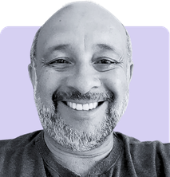

This year marks the 10th edition of Capella Days.
Be part of this important milestone for the Capella community!
Capella Days regularly brings together the community of Capella and Arcadia:
Capella Days is your opportunity to learn from Capella ecosystem members!
Benefit from valuable best practices and industrial feedback based on real-world applications.
You are a provider of services or products related to Capella?
Support the event and gain visibility from the Capella practitioners by sponsoring Capella Days.
| Time | Talks | Speakers |
|---|---|---|
| 3:30 pm UTC+1 | Welcome and Introduction | |
| 3:35 pm UTC+1 | From Learning to Modeling: The Hybrid Mining Truck Journey with Arcadia and Capella |
Rami Wehbe (SysDICE) David Pietsch (Rolls-Royce Power Systems) Mohammad Chami (SysDICE) |
| 4:15 pm UTC+1 | MBSE Toolchain based on Capella to Manage System Integration during the Engineering Phase | David Plancq (Nuward) |
| 4:55 pm UTC+1 | Non-Functional Requirement Creation & Traceability using Property Values | Joshua Wedgwood (Rolls-Royce ET&S) |
| 5:35 pm UTC+1 | Closing |
3:30 pm UTC+1 = 3:30 pm CET (Paris) = 11:30 am UTC-3 (Brasilia) = 9:30 am EST (New York) = 6:30 am PST (Los Angeles)
| Time | Talks | Speakers |
|---|---|---|
| 9:00 am UTC+1 | Welcome and Introduction | |
| 9:05 am UTC+1 | From Requirements to Engineering Decisions: Building an Aircraft Landing Gear System in Capella |
Apurva Pardeshi (Bluekei Solutions) Shefali Arya (TimeTooth Technologies) Randhir Swarnkar (TimeTooth Technologies) |
| 9:45 am UTC+1 | Modeling the European Railway System with Capella | Gauthier Jourdain (CESAMES) |
| 10:25 am UTC+1 | Validating Dynamic Behaviour in Complex Railway Systems Using Arcadia and POOSL |
Shantanu Patil (Bluekei Solutions) Gautam Shet (Bluekei Solutions) |
| 11:05 am UTC+1 | Closing |
9:00 am UTC+1 = 9:00 am CET (Paris) = 1:30 pm IST (Pune) = 4:00 pm CST (China) = 7:00 pm AEDT (Canberra)
| Time | Talks | Speakers |
|---|---|---|
| 3:30 pm UTC+1 | Welcome and Introduction | |
| 3:35 pm UTC+1 | Implementing ARCADIA and MBSE techniques for Future Earth Observation Missions | Dario Scimone (Indra Space) |
| 4:15 pm UTC+1 | Closing the Downstream Gap: From Arcadia Functional Breakdown to Requirements and FMEA |
Michael Handrischik-Bowman (Foxsolution) Tom Handrischik (Foxsolution) Denis Prell (Foxsolution) |
| 4:55 pm UTC+1 | e-F4GSA: Extended Framework for Generalized Space Architectures: An ARCADIA & Capella Perspective. | Antonio Cassiano Julio Filho (INPE) |
| 5:35 pm UTC+1 | Closing |
3:30 pm UTC+1 = 3:30 pm CET (Paris) = 11:30 am UTC-3 (Brasilia) = 9:30 am EST (New York) = 6:30 am PST (Los Angeles)
| Time | Talks | Speakers |
|---|---|---|
| 3:30 pm UTC+1 | Welcome and Introduction | |
| 3:35 pm UTC+1 | Automation and LLM use in Capella modeling | Enrico Soldà (Gran Sasso Science Institute) |
| 4:00 pm UTC+1 | Propose, gate, commit: keeping an Arcadia model trustworthy when an LLM helps build it | Karl Clark (BIG Intelligence) |
| 4:25 pm UTC+1 | Closing the MBSE Loop: Formal Requirements, AI-Guided Design and Continuous Verification with Capella |
Enrico Del Re (NM Robotic - EasySafe) Michael Naderhirn (NM Robotic - EasySafe) |
| 4:50 pm UTC+1 | Capella Agent: Closing the MBSE Consumption Gap with an AI Agent Inside Capella |
Anbarasu Mullainathan (DigitalThread.ai) Orlando Trejo (DigitalThread.ai) |
| 5:15 pm UTC+1 | Making Capella an Agent-Ready Platform | Stéphane Lacrampe (Obeo) |
| 5:40 pm UTC+1 | Closing |
3:30 pm UTC+1 = 3:30 pm CET (Paris) = 11:30 am UTC-3 (Brasilia) = 9:30 am EST (New York) = 6:30 am PST (Los Angeles)
What began as an introduction to Arcadia and Capella evolved into their practical application in the development of a Hybrid Mining Truck (HMT). The project provided an opportunity to move beyond methodology and tool training and establish model-based systems engineering in a complex, multidisciplinary engineering environment.
Using the Arcadia and Capella, the team incrementally developed the system of the Hybrid Mining Truck. The work followed an agile, sprint-based approach, with regular feedback from engineers and stakeholders. Rather than defining the architecture upfront, the model evolved together with the team’s understanding of the system, its boundaries, functions, interfaces, and design decisions.
The presentation shares this modeling journey from the perspectives of an industrial engineering team and an MBSE coach. It discusses practical challenges, collaboration with domain experts, and key lessons learned when moving from initial Capella training to the application of Arcadia in an actual development project.
Rami Wehbe (SysDICE)Rami Wehbe is a Senior Model-Based Systems Engineer at SysDICE GmbH, specializing in methods development, systems modeling, metamodels, and the customization of SysML and MBSE tools through plugins and automation. He also supports customers in adopting MBSE approaches and applying systems engineering and modeling practices across different programs and products. His focus is on bridging technical and non-technical perspectives through systems thinking, structured information gathering, and collaborative approaches that help customers establish a common understanding, make informed engineering decisions, and successfully adopt MBSE practices. Through training and knowledge transfer, he has supported and trained engineers in systems engineering and MBSE practices across Europe. His expertise spans systems engineering and life-cycle processes aligned with INCOSE principles, ISO 15288, ISO 29148, and IREB, alongside architecture description and modeling based on ISO 42010. |
|
David Pietsch (Rolls-Royce Power Systems)David Pietsch is a Systems Engineer at Rolls-Royce Power Systems, working on the practical application of Model-Based Systems Engineering (MBSE) in complex product development. Before joining the Hybrid Mining Truck project, he worked as a System Architect on a rail project, where he gained experience in interdisciplinary systems engineering and architecture development. In his current role, David uses the Arcadia methodology and Capella to develop and evolve system, logical, and physical architectures for the Hybrid Mining Truck. He works closely with engineering teams and stakeholders to transform requirements, technical knowledge, and design decisions into consistent system models. His particular interest lies in making MBSE useful in everyday engineering practice. This includes building a shared understanding across disciplines, supporting architecture-based decision-making, and continuously improving both the model and the underlying engineering approach. |
|
Mohammad Chami (SysDICE)Mohammad Chami is the founder and CEO of SysDICE GmbH and has over 15 years of working experience in the field of Model-Based Systems Engineering (MBSE), its modeling languages, defining processes and methods for system modeling and customizing its tools. He relocated from Lebanon to Germany in 2007 to pursue his second master’s in Mechatronics. Since then, he found his passion in MBSE and gained invaluable experience as a consultant in different MBSE applications, from digital transformation, systems modeling, requirements engineering, functional architecture, variant management, testing and safety analysis to verification and validation. In 2018, he founded Chami Consulting, a tool-independent MBSE services company with a mission to empower organizations and individuals to conquer their engineering challenges and successfully deploy MBSE. At the end of 2021, Chami Consulting was transferred to SysDICE GmbH. |
The development of advanced nuclear systems requires managing thousands of requirements, interfaces, design deliverables, verification activities and multidisciplinary stakeholders. To address this complexity, NUWARD has implemented an integrated Model-Based Systems Engineering environment using Capella as the architectural backbone of the NUWARD SMR engineering framework.
Capella is integrated with Polarion, AVEVA™ Unified Engineering and verification and change-management processes to establish a continuous digital thread across the product development V-cycle. Requirements captured in Polarion are linked to architectural elements in Capella, where functional analysis defines capabilities, functions, product structures and interfaces. The model supports complementary architectural views including the Functional Breakdown Structure, Product Breakdown Structure and interface architecture, providing a shared reference across engineering disciplines.
The toolchain also connects architecture with interface management, multidisciplinary design data, Verification & Validation and configuration management. Traceability between requirements, functions, components, interfaces and verification evidence enables impact analysis when requirements or designs evolve. The NUWARD experience demonstrates how Capella can move beyond architecture modelling to become an operational asset for system integration, engineering governance and digital continuity throughout complex engineering programmes.
David Plancq (Nuward)David Plancq is System Engineering and Configuration Manager on the NUWARD SMR program. |
Rolls-Royce and Obeo have developed a new open source add-on which assist users with "quality of life improvements" to managing Property Values and visualising traceability. This presentation shares the new add-on and the theory behind it.
Joshua Wedgwood (Rolls-Royce)Joshua Wedgwood is a Systems Design Integrator with Rolls-Royce, where he has worked since 2012. His career has spanned gas turbine performance, systems integration, verification and capability development. Joshua holds a Bachelor's degree in Mechanical Engineering and a Master's degree in Systems Engineering. He currently works within the MBSE Capability team, leading the development and deployment of MBSE practices across the Rolls-Royce group. Alongside this, he supports a range of systems engineering and systems integration challenges on major programmes. |
Developing an aircraft landing gear system requires requirements, functions, allocations, and interfaces to remain consistent as the architecture evolves. This project progressively transformed 804 requirements into a retractable landing gear architecture across Operational Analysis (OA), System Analysis (SA), Logical Architecture (LA), and Physical Architecture (PA), using the architecture continuously to check and refine the system definition at every layer.
Linking requirements to functions at each layer let the team trace architectural elements back to their originating requirements and identify gaps difficult to see in requirements documents alone. For example, tracing the retraction functional chain exposed that a requirement addressed main-wheel braking before retraction but did not address stopping nose-wheel rotation. Similar tracing turned other allocation and responsibility gaps into concrete engineering decisions.
The work then established a closed loop between the architecture and engineering teams. Architecture information was extracted with Python4Capella into structured, engineer-consumable Excel views covering requirements, functions, allocations, and interfaces. Engineers reviewed and corrected requirement links or allocations in these views, then re-imported the corrections into the live architecture, with automated checks flagging incomplete or mismatched traceability.
This approach changed the role of the architecture from a model produced for review into a continuously maintained engineering reference: engineers could consume, correct, and contribute to it without working in the modelling environment, while the live model remained the basis for further analysis.
These same exports fed safety assessment directly: the function list gave a complete inventory of system functions, and the architecture explained how those functions depend on one another, letting failure analysis reason from real dependencies instead of assumptions.
Apurva Pardeshi (Bluekei Solutions)Apurva Pardeshi is a Systems Engineer with experience in aerospace and defence systems engineering and MBSE, with a focus on applying Capella to system architecture development, requirements traceability, and engineering analysis. Apurva is currently contributing to the architecture of aircraft landing gear systems and developing practical MBSE workflows for complex systems. |
|
Shefali Arya (TimeTooth Technologies)Shefali Arya is a Systems Engineering professional at TimeTooth Technologies, working on the development and application of model-based approaches for complex engineering systems. Her work focuses on systems architecture, engineering processes, and MBSE practices for aerospace and advanced engineering applications. |
|
Randhir Swarnkar (TimeTooth Technologies)Randhir Swarnkar is a Lead Engineer at TimeTooth Technologies with a background in mechanical engineering and experience contributing to advanced engineering and aerospace development programs. His work spans engineering development and system-level product realization, including TimeTooth's aircraft landing-system initiatives. |
The European railway system is a highly complex ecosystem involving infrastructure managers, railway undertakings, suppliers, authorities and many other stakeholders whose decisions continuously interact.
Within the System Pillar Task 1, we developed a global operational architecture of the railway system, structured around a set of detailed railway capabilities. The objective was not simply to model existing processes, but to provide a coherent description of how the railway system operates as a whole: its actors, operational activities, exchanges, dependencies and key interfaces.
Using Capella and an architecture-driven approach made it possible to describe operational domains that had previously been addressed separately and to connect them within a common system view.
This presentation will share the approach, the architecture principles and selected examples from the model. It will also illustrate how such an operational architecture can become a practical decision-support framework: helping stakeholders understand the impact of transformations, identify dependencies and bottlenecks, align initiatives and reason about the evolution of the railway system at European scale.
Gauthier Jourdain (CESAMES)Gauthier Jourdain is Partner and Chief Technology and Product Officer at CESAMES, the leading group in the systems approach and its operational implementation, that enhances the performance of complex systems. Over more than a decade, Gauthier has supported large-scale transformations across aerospace, telecom, railway, automotive, and digital industries, first as an engineer on launcher and space mission programs at Airbus Defence and Space and ArianeGroup, then as CTO of ONESITU by CIRCET, where he led product and technology development for smart-parking IoT solutions. He has also taught systems engineering and economic statistics at CentraleSupélec and Sciences Po. |
Modern railway systems are complex, distributed and time-critical cyber-physical systems where system performance depends not only on the correctness of individual functions and components, but also on their interactions, sequencing, synchronization and timing behaviour. Traditional architectural modelling provides an effective way to define system functions, components and interfaces; however, dynamic behavioural inconsistencies may remain hidden until system integration or testing.
This work proposes an integrated Model-Based Systems Engineering (MBSE) approach that combines the Arcadia methodology with Parallel Object-Oriented Specification Language (POOSL) for executable discrete-event behavioural validation. The objective is to establish a practical bridge between architectural modelling and dynamic behavioural analysis at an early stage of the system lifecycle.
The Railway Coupler System is selected as the System of Interest (SOI) to demonstrate the proposed approach. The system architecture is first established using Arcadia/Capella, capturing relevant functions, components, interactions and exchanges. Selected operational scenarios are then represented using POOSL to investigate the dynamic behaviour of the system under normal and degraded conditions.
Shantanu Patil (Bluekei Solutions)Shantanu Patil is a detail-oriented designer with expertise in CAD design, drafting, and control panel design. Proficient in AutoCAD and Revit, specializing in creating accurate 2D and 3D layouts, schematics, and blueprints. Skilled in meeting project requirements and industry standards, with a strong focus on quality and workflow efficiency. |
|
Gautam Shet (Bluekei Solutions)Gautam Shet is a Systems Engineer focused on Systems Engineering and Model-Based Systems Engineering (MBSE). His expertise spans system architecture, embedded systems and product engineering, with an emphasis on requirements traceability, functional decomposition and lifecycle alignment. He combines model-based development with hands-on engineering to support the design and integration of complex systems across aerospace, automotive, electronics and sustainable energy. |
The adoption of Model Based Engineering techniques is increasingly recognized as a valuable answer to the growing complexity of space systems and missions. However, industrial players often face significant challenges when transitioning from traditional document-centric engineering processes to model-based methodologies.
As a response to these challenges, Indra Space is pursuing a digital transformation towards a more streamlined and collaborative engineering process. This presentation addresses the experience gained from adopting the Arcadia methodology and the Capella modelling tool for the development of the company's future very-high-resolution Earth observation satellite.
Introducing MBSE into an active industrial programme is a complex task, as adapting the methodology to an already established design environment proved to be a greater challenge than the deployment of the tool itself. Within the project, Arcadia and Capella are being progressively integrated throughout the project lifecycle, involving all relevant engineering disciplines. Rather than introducing MBSE as a detached activity, gradual integration is achieved through a dedicated model owner ensuring consistency and maintainability of the architecture. Moreover, Capella diagrams are incrementally introduced as a key tool for architecture and design meetings, supporting interface definition and multidisciplinary technical discussions.
To achieve this goal, particular attention is given to the development of a modelling strategy that keeps the architecture understandable, traceable, maintainable and aligned with stakeholders' expectations, mission objectives and requirements. The resulting model has supported engineering activities by providing a common and readily available single source of truth. The experience also highlighted practical lessons that are being embedded into the company's MBSE methodology.
Dario Scimone (Indra Space)Dario Scimone is a Junior System Engineer at Indra Space, where he contributes both as a System Architect for the development of MBSE models and as a Platform System Architect, with a particular focus on electrical power subsystem. He holds a B.Sc. in aerospace engineering and M.Sc. in space engineering from Politecnico di Milano. During his studies, he held first the role of Projects Lead and later President of PoliSpace, the university’s student space association, leading multidisciplinary teams for the successful development of innovative space projects. |
Many organizations invest heavily in building solid Arcadia models. Operational analysis, system analysis and physical architecture are done with care, the functional breakdown is clean, and the model truly reflects the system. Then the downstream work begins: requirements are written manually in a separate tool, FMEA tables are built from scratch in spreadsheets, and test cases reference documents instead of model elements. Within weeks the model and the documentation drift apart, and the single source of truth quietly stops being one.
In this talk we present an approach to close that gap. The core idea: if the Arcadia layers are built with the right discipline, requirements, risk artifacts and traceability can be derived from the model instead of being retyped next to it. We show how the functional breakdown across SA and PA becomes the backbone for template based requirements at each level, how functions drive structured failure mode analysis (loss, degradation, unintended behavior), and how a traceability gate keeps derived artifacts consistent with the evolving model.
We walk through the full chain live on a concrete example: FOX-1, an Earth observation CubeSat modeled in Arcadia, with power and thermal management across orbit phases as the lead use case. From functional chains to derived requirements to an FMEA table, including a live demonstration of AI assisted derivation, and a clear view of where the engineer must stay in control. The approach itself is tool independent; the demonstration shows one possible implementation.
Attendees take away a practical, tool independent method for making their Capella model the true source of downstream engineering artifacts.
Michael Handrischik-Bowman (Foxsolution)Michael Handrischik-Bowman is a Senior Systems Architect and CEO of Foxsolution. Since 2012 he has led MBSE and Requirements Engineering programs in Medical Technology, Automotive, and Aerospace and Defense, with Arcadia methodology leadership across all major toolchains. His focus is full ALM to PLM integration with real traceability from user need to physical component, including risk management (ISO 14971), cybersecurity (ISO 21434) and test management. His guiding principle: architecture as truth, compliance as byproduct. |
|
Tom Handrischik (Foxsolution)Tom Handrischik is a Requirements Engineer and Deputy Managing Director at Foxsolution with deep command of model based methodology from user needs down to design level, applied from the leadership and steering perspective. With several years of Requirements Engineering in regulated medical technology, he has led pilot and rollout projects for model based ways of working, built the surrounding reporting and governance structures, and trained engineering teams through the transition. In this talk he covers adoption, rollout and the demonstration part. |
|
Denis Prell (Foxsolution)Denis Prell is Senior Lead System Architect at Foxsolution, OCSMP certified, with hands-on Arcadia and Capella experience. He has built system architectures and model based requirements structures for medical devices including an ophthalmological implant and systems for eye visualization and refractive correction, and supports teams through MBSE introduction, process modeling and training. In this talk he covers the Arcadia methodology depth. |
The National Institute for Space Research (INPE) is internationally recognized for its expertise in space mission development, integration, operation, and scientific data distribution. Its portfolio, including the CBERS, the Amazonia-1, and small satellites, illustrates the growing demand for integrated mission architectures. The CBERS program, a partnership between INPE and the China Academy of Space Technology (CAST), has promoted remote sensing technology and data accessibility. The Amazonia-1, the first satellite fully developed in Brazil complements operational programs such as Brazilian Real-Time Deforestation Detection System (DETER), and Measurement of Deforestation by Remote Sensing (PRODES). Additionally, INPE has developed Analysis Ready Data (ARD), standardizing satellite data for interoperability and enhancing scientific research.
The mission integration, however, poses challenges in the scheduling and system design. A key issue stems from the lack of emphasis on mission segments complexities in early mission phases. To address these challenges, this talk presents the extended Framework for Generalized Space Architectures (e-F4GSA), a MBSE approach that improves architectural design, and integration, enabling end-to-end processing from data acquisition to distribution. The e-F4GSA extends the original Framework for Development of Space Mission Ground Segment Architectures (F4GSA).
The e-F4GSA is based on INCOSE Systems Engineering, NASA Systems Design, ARCADIA and Space Mission Guide, integrating MBSE practices widely adopted in critical systems engineering. Its practical value is demonstrated through a real-world case study of BiomeSat, a Brazilian satellite mission designed for remote sensing and biome health monitoring. Results emphasize the importance of leveraging existing solutions, promoting adaptability, and flexibility to ensure coherence and traceability in system design, thereby providing a holistic perspective on space missions.
 |
Antonio Cassiano Julio Filho (INPE)Antonio Cassiano Julio Filho is a Technical Manager at INPE with over 41 years of experience in Space Engineering. He holds a degree in Electronics, a Bachelor's degree in Systems Analysis and Development, a Master's degree and a PhD in Engineering and Management of Space Systems from the National Institute for Space Research (INPE), Brazil. His academic background combines electronics, computer systems, and aerospace engineering. His areas of expertise include Ground Systems for Satellite Control, Communication Protocols for Space Applications, Space Systems Modeling through MBSE, and Technical Management of Satellite Tracking and Control Systems. He represents INPE as an observer member in the Cross Support Transfer Services of the Consultative Committee for Space Data Systems (CCSDS). Additionally, he contributes as a research advisor in the Institutional Scientific Initiation Scholarship Program at INPE. |
Automation process from requirements to design and automation of transformation management as means to improve quality, performances, reliability, reproducibility, and assurance in design and development of systems using model based approach supported by LLMs.
The model and validation tools act as shields for a neurosymbolic approach to system design starting from existing knowledge and design base plus high level requirements. The whole process is integrated with intermediate verification steps and automated.
Enrico Soldà (Gran Sasso Science Institute)Enrico Soldà is an aerospace engineer with experience in safety-critical avionics, systems engineering and project management. He spent seven years at Leonardo working on the design, verification, validation and certification of flight control systems, and later contributed to complex international engineering projects. His current interests focus on AI, digital twins, robotics and cyber-physical systems, with a strong emphasis on their application to advanced engineering and MBSE. |
Teams adopting Arcadia rarely start from a blank canvas. They start from a document estate - specifications, interface descriptions, requirement exports - and the real cost of entry is reconstructing the operational, system, logical and physical layers from material never written to be a model. A language model is an obvious accelerant and an obvious hazard: a plausible element that nobody authored is worse than a missing one.
This talk presents a discipline for letting an LLM participate in that reconstruction without letting it author the model. The rule is a separation of powers. The LLM only ever emits a structured proposal. A deterministic, non-AI validator checks that proposal against the method's own rules - which layer an element belongs to, what must exist before it may exist, vocabulary constraints, and an unbroken link back to a source document. A separate non-AI component is the only thing that writes. An engineer approves at each gate, and the named engineer, not the tool, owns the decision.
Our argument to this audience: Arcadia is what makes the gate possible. A notation gives you precision; a method gives you prescription - what should exist at each level, and when a level is complete. Prescription is what a validator can be written against.
We will show failure modes we only found by running this in anger: a conductor claiming gate provenance it had not earned, an assistant silently renaming engineer-authored elements, and an agent returning 7 of 54 required failure modes with nothing detecting the shortfall.
We will be equally clear about limits. This is an automotive-first implementation from BIG Intelligence with no European deployment to report; signer identity is locally configured and self-asserted in the current build; and full automatic cross-pillar convergence of the safety analyses is next, not now. The practice, not the product, is the contribution.
Karl Clark (BIG Intelligence)Karl Clark is the founder and CEO of BIG Intelligence, an automotive engineering-AI company based in Detroit, Michigan. He spent twenty-nine years at Ford Motor Company, where he co-founded the Feature Organization, pioneered Cloud Assisted Diagnostics, and led a global diagnostics organisation of more than 85 engineers. He holds ten US patents across over-the-air update, connectivity and security, diagnostics, and blockchain. His current work is on governed AI for systems engineering: how a language model can accelerate the construction of an Arcadia model without ever being allowed to author it, and what evidence a safety assessor should be able to demand of any model an AI helped build. |
Up to 40% of project effort is consumed by rework, and 70 to 85% of that rework traces back to requirement errors. Most of that cost is set early, in how requirements are written and connected to the design.
EasySafe is our approach to reducing those costs, both by cutting errors and by leveraging AI to improve efficiency. AI writes candidate requirements, formally verified for consistency, completeness, realizability, and vacuity before a human ever reviews them. Review findings become issues, worked locally and synced through Git, then corrected by human reviewer and AI alike.
From those verified requirements, together with human instructions, an AI assistant builds the Capella model itself, through a Model API currently reachable from VSCode. The result is a model derived from checked requirements rather than created by hand from scratch.
Correctness of that model is established, not assumed: state machines and scenarios are formally checked, and a subsystem can be checked against the requirements of its parent system. Code verification is planned as a further step.
The demonstration will follow this chain end to end: deriving a requirement from a source document, reviewing it through the issue workflow, and watching the AI assistant generate the corresponding part of the Capella model.
Enrico Del Re (NM Robotic - EasySafe)Enrico Del Re is a physicist, researcher and systems engineer with a background in artificial intelligence, autonomous systems and systems engineering. He studied Physics and is currently pursuing a PhD focused on autonomous vehicles, with research interests spanning robust decision-making, safety and intelligent transportation systems. He has worked in systems engineering and has also contributed to the development of robust AI technologies. His current interests lie at the intersection of AI and Model-Based Systems Engineering, with a particular focus on using Capella to structure, analyze and communicate complex system architectures. |
|
Michael Naderhirn (NM Robotic - EasySafe)Michael Naderhirn is a mechatronics engineer, systems architect and entrepreneur with a background in robotics, control systems, autonomous systems and aviation. He holds a PhD in Mechatronics and has founded and contributed to technology companies in areas including radar, autonomous driving and flying, and neuromorphic computing. His recent work focuses on systems engineering and the development of safety-critical autonomous aircraft, including flight control, navigation, simulation, testing and certification-oriented development processes. He is the developer of EasySafe, an engineering framework integrating formal requirements, MBSE, AI-assisted system design, formal design and code verification, and human review. His current research focuses on combining AI with rigorous systems-engineering methods to make complex system development more automated while maintaining traceability and verifiability. |
Every MBSE program hits the same wall: a handful of Systems Engineers can author & read the MBSE models, while the rest of the organization like multi-disciplinary design engineering teams, simulation & test, manufacturing, suppliers, management have a difficulty consuming it. The knowledge is captured once, in Capella, then re-typed into slides and spreadsheets, and that is where MBSE ROI quietly dies.
Capella Agent is a multi-agent AI extension that attacks this consumption gap from inside the workbench. It registers 100+ typed, model-aware tools with an LLM-agnostic core (BYOK, 11 providers, including fully local Ollama for air-gapped sites), so anyone can ask the live ARCADIA model a question in plain language and get an answer that cites real element UUIDs with "not modelled" reported honestly rather than filled in. Ten role-based agent modes serve the model's consumers, not just its authors: onboarding, sustainment, documentation, requirements, traceability audit, and more.
Consumption goes beyond chat. The agent generates Interface Control Documents and design-description first drafts directly from the model, exports real Sirius diagram renders, round-trips requirements via ReqIF, and pushes model structure and diagrams into PLM, where the rest of the organization already works. A headless harness runs the full workbench with no window: the same tools serve CI pipelines and external agents over MCP, and legacy models migrate unattended.
Trust is engineered in: read-only by default, model writes as single undoable Eclipse transactions, destructive operations requiring explicit consent, and a tamper-evident audit log.
We will demonstrate all of this live on the In-Flight Entertainment System sample and on public community models we migrated headlessly to Capella 7.0.1, and share what worked, what broke, and the lessons of building an AI agent that treats the Capella model as the only source of truth deterministically.
Anbarasu Mullainathan (DigitalThread.ai)Anbarasu Mullainathan is a Digital Engineering specialist with close to 20 years of experience, including Product Lifecycle Management (PLM), CAD, MBSE and CAE applications. He is building AI + Digital Engineering solutions at DigitalThread.ai. He also serves as a PLM Solutions Architect at Applied Materials, where he focuses on implementing and managing cutting-edge tools and methodologies to enhance operational efficiency and streamline processes. He builds AI Agents and Workflow Orchestrations within the PLM domain to help accelerate the Hardware Product Development cycle. |
|
Orlando Trejo (DigitalThread.ai)Orlando Trejo is a multidisciplinary engineer with a background in mechanical, chemical, materials science, and systems engineering. He has worked with scientists in universities and national laboratories on research into solar energy harvesting materials, and with engineers in global companies to design materials engineering tools. Building on his experience in Information Technology, he has also helped lead digital engineering roadmaps integrating engineering disciplines and digital technologies. He is currently building AI + Digital Engineering solutions at DigitalThread.ai. |
AI agents are opening new possibilities for Model-Based Systems Engineering, from exploring and understanding architectures to supporting analysis, model evolution, documentation, and engineering workflows across multiple tools.
As these use cases multiply, integrating AI with Capella cannot rely on a collection of isolated assistants and custom integrations. A more general approach is needed: one that makes Capella accessible to different LLMs, AI agents, and enterprise AI environments while preserving the rigor, traceability, and control required for industrial MBSE.
In this talk, we will present how Obeo is making Capella an agent-ready platform, exposing selected modeling capabilities to AI agents through standard interfaces such as MCP and APIs. We will show how this approach keeps engineers in control while giving organizations the freedom to use the AI technologies that best fit their environment.
We will demonstrate this approach in action and discuss how it provides a foundation for increasingly rich agentic workflows around Capella.
Stéphane Lacrampe (Obeo)Stéphane Lacrampe is a co-founder of Obeo, and the director of the North American subsidiary of Obeo in Vancouver, Canada. MBSE enthusiast Arcadia/Capella evangelist, and Open Source advocate, Stéphane is also an active INCOSE member. |